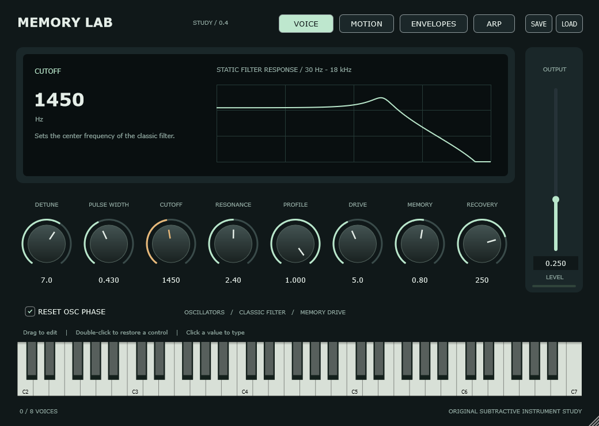

Voices to play with
Polyphonic notes, sustain and expressive pitch and pressure controls.
Eight voices. Two oscillators. A drive stage that responds to what came before.
An ongoing study in sounds that invite you to keep playing.
Hear the experiment
Shape two oscillators, sweep the classic filter, and explore shared drive, memory and recovery.
Polyphonic notes, sustain and expressive pitch and pressure controls.
Amplitude and filter contours with delay, attack, hold, decay, sustain and release.
A per-voice sine LFO and an optional arpeggiator that follows host or internal tempo.
A first experiment with drive after each voice’s filter. Compare a single note with an E-minor chord as the low-pass filter opens.
Bypass, +8 dB and +24 dB, matched to −24 dBFS RMS. Listen for texture, bite and the separation between notes.
Simple hard clipping, not a model of a hardware VCA. Shared memory drive is set to zero here. This experiment is not in the installed plugin.
A SINGLE E NOTE · 3 SECONDS · 48 KHZ
No autoplay. Playing one example pauses the others. RMS matching helps comparison; perceived loudness can still vary.
Memory Lab began with a question: what happens when a drive stage remembers recent signal energy? That shared memory stage remains at the heart of the study.
Research into the Shear Electronics Relic informs new experiments, including per-voice drive and richer modulation. This is an original, partial instrument—not a complete Relic emulation or a measured hardware match.
Read the development notebookSource and notebook links require repository access while the project is private.
Eight-voice engine, classic filter sweep, editable envelopes and an optional arp. Played and enjoyed in FL Studio.
Save and load all 35 controls in a separate patch file. The development editor shown here includes these buttons.
Per-voice drive is the current listening study. Future candidates include oscillator mixing, envelope contours and richer filter modulation.
The current preserved source milestone is v0.4.0-alpha.2. Source prereleases document the instrument as it grows; there is no downloadable plugin binary yet.
Private repository access required. Windows x64 development builds; native patch dialogs in FL Studio still await verification.